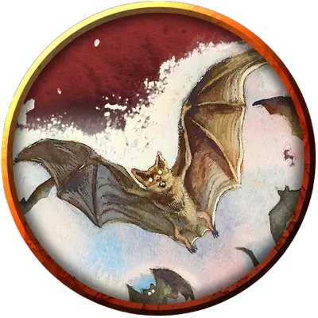

Гигантская летучая мышь
Giant Bat
Большой Зверь, без мировоззрения

Класс Доспеха 13
Хиты 22 (4к10)
Скорость 10 футов, летая 60 футов
| мод | спас | ||
|---|---|---|---|
| СИЛ | 15 | +2 | +2 |
| ЛОВ | 16 | +3 | +3 |
| ТЕЛ | 11 | +0 | +0 |
| мод | спас | ||
|---|---|---|---|
| ИНТ | 2 | −4 | −4 |
| МДР | 12 | +1 | +1 |
| ХАР | 6 | −2 | −2 |
Чувства слепое зрение 60 футов, пассивное Восприятие 11
Опасность 1/4 (50 опыта)
Бонус мастерства +2
Среда обитания Лес, Подземье
Особенности
Эхолокация. Летучая мышь не может использовать слепое зрение, будучи оглохшей.
Острый слух. Летучая мышь совершает с преимуществом проверки Мудрость (Восприятие), полагающиеся на слух.
Действия
Укус. Рукопашная атака оружием: +4 к попаданию, досягаемость 5 футов, одно существо. Попадание: 5 (1к6 + 2) колющего урона.